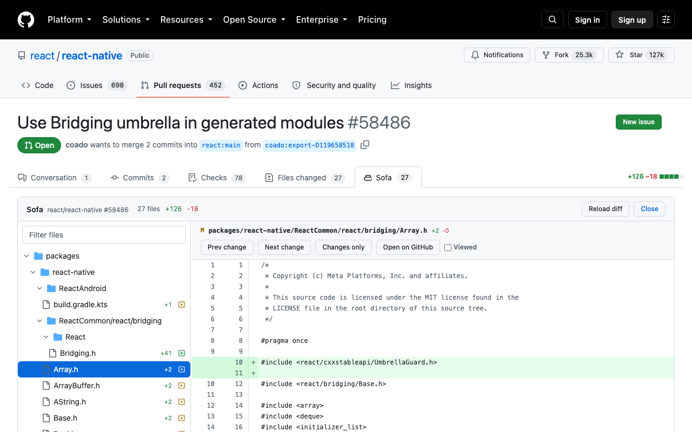

Sofa adds a tab to GitHub that shows each changed file in full, with the diff spliced into it. No more judging a change through three lines of context.
Chrome Web Store listing is in review. Free and open source.

GitHub shows a diff as a handful of hunks with three lines of context around each one. When the change sits inside a long function, that is not enough to judge it: you cannot see what the variable was, what the branch above does, or whether the early return you are reading is the one that matters. Expanding line by line is slow, and sometimes it simply does not load.
Sofa fetches the whole file at the pull request's head commit and renders every line of it, with added lines marked green, removed lines red and interleaved where they used to be, and both line-number gutters correct from the first line to the last.
Every line of the file, with the diff in context. Toggle back to changes-only when you do not need it.
Collapsible directories, status icons, per-file counts, a filter, a draggable width, and viewed state that sticks.
A tab beside Files changed, using GitHub's own colours, fonts and icons. Your theme is its theme.
Jump between changes and files without reaching for the mouse.
Every file is fetched in the background as soon as the diff loads, so clicking one opens it immediately.
Add your company's GitHub host from the toolbar popup. Nothing about it is baked into the extension.
| n / p | Next or previous change in the file |
| ] / [ | Next or previous file |
| w | Whole file or changes only |
| v | Mark the file viewed |
| / | Filter files |
| esc | Back to GitHub |
From source, until the store listing is approved:
git clone https://github.com/rousan/sofa.git
cd sofa
npm install
npm run build
Then open chrome://extensions, turn on Developer mode, choose
Load unpacked, and pick the dist folder.
Open any pull request and click the Sofa tab.
Sofa reads the pages you already have open, using the session you are already signed in with. It collects nothing, sends nothing anywhere, and has no server of its own. The only thing it stores is which files you have marked viewed, in your browser, per pull request.